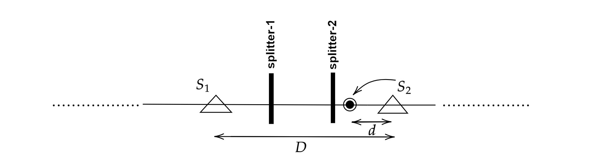

Randomization in Double Coverage Algorithm on a Line for Online k-Server problem
Objective
In the online k-server problem there is a set of k servers, represented as points in a metric space, to
handle requests that are also in the form of points in the space and appear one after another. For each request,
the algorithm must determine which server to move to the requested point. If the servers and the requests lie on
a line we call the problem online k-server problem on a line. The goal is to minimize the total distance traveled
by the servers for serving a sequence of requests.
Double Coverage Algorithm for Line
A very elegant online algorithm for the line
is the Double Coverage Algorithm by Chrobak et. al. It is like the Greedy Algorithm which always moves
the closest server to the request. Instead, the Double Coverage Algorithm moves usually
the two closest servers toward the request. In particular, when the request is between two
servers (inside the “convex hull"), the algorithm moves both servers towards the request; the
servers travel the same distance, equal to the distance of the request to the closest of the
two servers until (at least) one server reaches it (If two servers occupy the same point, then
choose one arbitrarily). When the request falls outside the “convex hull" of the k servers,
only the closest server moves to it.
Methodology
We develop two randomized variants of the Double Coverage (DC)-Line algorithm: RAND &
SEMI-RAND.
RAND
If the current request lies outside the convex hull of the current locations of the servers, RAND
serves it with the nearest server.
Otherwise, it randomly chooses one of the adjacent servers and moves it toward
the request.
SEMI-RAND
SEMI-RAND works more efficiently. Initially, we keep two splitters for each pair of adjacent servers between
their paths. If the current request lies outside the convex hull of the current locations of the servers, serve it with the nearest
one. Otherwise,
- If the request is at the left side of splitter-1 (inclusive), serve it with the left server among its adjacent
two servers.
- If the request is at the right side of splitter-2 (inclusive), serve it with the right server among its
adjacent two servers.

-
If the request is in between splitter-1 and splitter-2, choose randomly any of the
adjacent servers and serve the request with it.
Results Summary
We show that the probabilities of RAND and SEMI-RAND of being k-competitive are 1/2 and 5/6,
respectively using interleaving move style. It is known that the competitive ratio of any randomized algorithm
for the online k-server problem is at least k (Motwani & Raghavan, pp. 368–391, 1995) and hence our algorithm
matches the lower bound. Apart from competitive analysis, we perform a cost comparison between the original
DC-Line algorithm and our algorithms. Our results and analysis prove that RAND takes less cost except for one
case and SEMI-RAND always requires less cost than the original DC-Line algorithm which shows the power of
randomization in an online algorithm working against an adaptive online adversary. Using that cost analysis we
show that SEMI-RAND is no worse than DC-Line in terms of competitive ratio.
Contributions
In this paper, we have worked on the randomization in the Double Coverage Algorithm on
a line (DC-Line) for the online
k-server problem. As no work has been done before on the
power of randomization in the DC-Line algorithm, our work makes an important contribution
to this problem. We develop two randomized variants of the DC-Line algorithm which are
proved as
k-competitive with probability 1/2 and 5/6. According to
Lemma1, our results match
with the known lower bound on competitive ratio with probabilities mentioned below. To
the best of our knowledge, among the recent works of randomized algorithms for the online
k-server problem on a line, the algorithm provided by Csaba and Lodha gives super-linear
bound for n with o(
k)–competitiveness for the first time. But their algorithm works against
“oblivious adversary” which is weaker than “adaptive online adversary” against which we have worked on.
Lemma1:
Let R be a randomized online algorithm that manages k servers in any
metric space. Then Caon R ≥ k, where
Caon R
is the competitive ratio of that randomized
algorithm that moves against any adaptive online adversary.